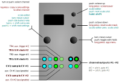

Meta-Q

Meta-Q is a dual-channel quantiser that’s basically similar to Quantermain, except, of course, there are only two channels. It has fewer internal CV sources (currently, only LFSR. See Copiermaschine/Quantermain for details), but comes with four ‘scale slots’ per channel — a package of scale, mask, root and transpose values —, which themselves can be sequenced to provide a lot of additional, structured variation to the input CV sequences (or the LFSR internal CV source).
scale ‘slots’ / seq mode:
-
Each scale ‘slot’ (=
scale #) can be mapped to any of the available preset and user scales and/or scale masks (via the main menu or scale editor). The scale slots can also be assigned their own root and transpose settings. -
The scale editor in Meta-Q thus is slightly more complex than in the other modes: it allows you to edit the four scales-slots (not just one scale) from within the editor, ie both scale as well as the root and transpose values. In basic use, it works much the same as in Quantermain or Copiermaschine; notably, the
upbutton behaves slighlty differently, however: in the Meta-Q scale editor it assumes a ‘shift’ functionality to access the (slot-specific) root and (diatonic) transpose settings (details see below). -
What is more, said four scale-slots can be sequenced (or just toggled) by using a clock signal and/or by modulating the slot-parameter with a control voltage:
-
Use the auxiliary trigger inputs TR2 resp. TR4 to cycle through either 2, 3, or 4 adjacent scale slots: see the
seq modesetting. Available settings are TR+1 (= plus next scale), TR+2 (= plus next two scales), TR+3 (= plus next three scales). Things wrap around slot #4. Thus, for example, when selectingscale #= 3 andseq mode= TR+2 (= scale #3 plus next two scales), when clocked via the aux. trigger input, the scale slots will step through the following sequence: #3, #4, #1, #3, #4, #1, #3, #4, #1, #3, #4, #1, #3 … -
Setting the
CV aux.parameter toscl#(= scale #) allows modulation of the slot-parameter with a CV signal applied to CV2 (channel #1) or CV4 (channel #2). (Alternatively, CV aux. can be routed to root, mask (= scale mask), trns (= transpose/scale degrees), or oct (transpose/octaves)). -
NB: inputs TR2 and CV2 are hardcoded to service channel #1, TR4 and CV4 to service channel #2.
-
aux. outputs (C, D):
-
when
trigger source= TR1 - TR4, the aux. outputs (C, D) simply pass through the main trigger signal, with adjustable pulse-width (--> pw); when set to continuous (cnt), the aux. output goes high if/when the note changes (= trigger-on-note-change). -
the aux. outputs can alternatively output a transposed copy of the main channel CV (aux.output =
copy), or output said CV, delayed by one clock (aux.output =asr).
Inputs and outputs
| I/O | Function | - |
|---|---|---|
| TR1 | clock input #1 | - |
| TR2 | aux. / scale sequencer clock #1 | - |
| TR3 | clock input #2 | - |
| TR4 | aux. / scale sequencer clock #2 | - |
| CV1 | sample in # 1 | - |
| CV2 | (mappable) | - |
| CV3 | sample in # 2 | - |
| CV4 | (mappable) | - |
| A, B | CV outputs #1, #2 | - |
| C, D | aux outputs #1, #2 (default to gate output) | - |
Available settings (per-channel)
| Setting | Meaning |
|---|---|
scale |
selected scale |
--> edit |
edit scale mask (for details see Quantermain and below) |
seq mode |
number of slots (-, 2, 3, or 4) to advance scale sequencer before reset (via TR2 resp. TR4) |
scale # |
selected scale slot (#1 - #4) |
root #n |
root note for scale slot n |
transpose #n |
offset (in scale degrees) for scale slot n |
octave |
offset in octaves (for all scale slots) |
CV source |
sample input, internal/external (CV1 - CV4, LFSR) |
CV aux. |
auxiliary CV input destination: scale #, root, transpose, octave, mask |
trigger source |
main trigger source: TR1 - TR4 , cnt+, cnt- (†) |
--> latency |
trigger-to-quantization latency (default: 0 = 60 us). Note: this is equivalent to the Trigger delay setting in several of the other apps, please see the Quantermain app documentation for a discussion of this setting. |
aux.output |
aux channel output: gate, copy, asr (††) |
--> pw |
pulse-width of triggers at C/D outputs (gate mode) |
--> aux +/- |
pitch offset at C/D outputs (in octaves) (copy and asr modes) |
> LFSR length |
length of shift register (when in LFSR mode) |
> LFSR p |
probability of flipping (when in LFSR mode) |
> LFSR range |
output range (when in LFSR mode) |
> LFSR CV |
destination of CV1 resp. CV3 (when in LFSR mode) |
> LFSR TRIG |
aux channel output (when in LFSR mode): echo, lsb, chng: clock through, track LSB, and output on note-change |
- notes:
- (†)
cnt+andcnt-= continuous quantization; in this case, a gate applied toTR1resp.TR3will shift the pitch up (cnt+) or down (cnt-) by one octave. - (††)
copysimply duplicates the main channel output to the aux channel output.asrdoes the same, but delayed by one clock.
- (†)
Controls:
main menu
| Control | Function |
|---|---|
| Left encoder (turn) | select channel |
| Left encoder (press) | toggle channel |
| Left encoder (long press) | copy selected scale/mask to all channels/slots |
| Right encoder (turn) | Navigation mode: move up and down through the menu items. Edit mode: increase or decrease the value being edited |
| Right encoder (press) | Toggle between menu navigation (selection) mode and value editing mode |
| Right encoder (long press) | app selection menu |
| Up button | Transpose up: one octave (parameter menu) |
| Down button | Transpose down: one octave (parameter menu) |
| Up button (long press) | invoke screensaver |
| Down button (long press) | reset scale mask |
scale editor
-
works mostly the same (as in the other quantising modes). Notably, the
upanddownbuttons behave slighlty differently, however: pushingupwill point the editor to the next scale-slot, pushingdownwill point it to the previous scale-slot. This way, you can edit all the scale-slots more easily from within the editor. -
In the editor, you can also change the scale-type, root, and transpose settings: to do so, hold the
upbutton (= ‘shift’) while turning the left encoder: that’ll change the scale, just like in the regular menu. to edit the root and transpose values, hold theupbutton, then push the left encoder (= ‘shift’ + push left): that’ll open a new window, displaying the slot’s root and transpose values. you can select which parameter to edit by using the left encoder; adjust the value by turning the right encoder; or use the up / down buttons to advance to a different slot. push the left encoder again to return to the basic scale editor.
| Control | Function |
|---|---|
| Left encoder (turn) | select note |
| Left encoder (push) | activate/de-active note |
| Right encoder (turn) | rotate mask |
| Right encoder (push) | exit editor |
| Up button (push) | go to next scale slot |
| Down button (push) | go to previous scale slot |
| Up button (hold) + Left encoder (turn) | shift: select scale |
| Up button (hold) + Left encoder (push) | shift: toggle root/transpose view |
| Right encoder (long press) | – (app selection menu) |
| Up button long press | – (screensaver) |